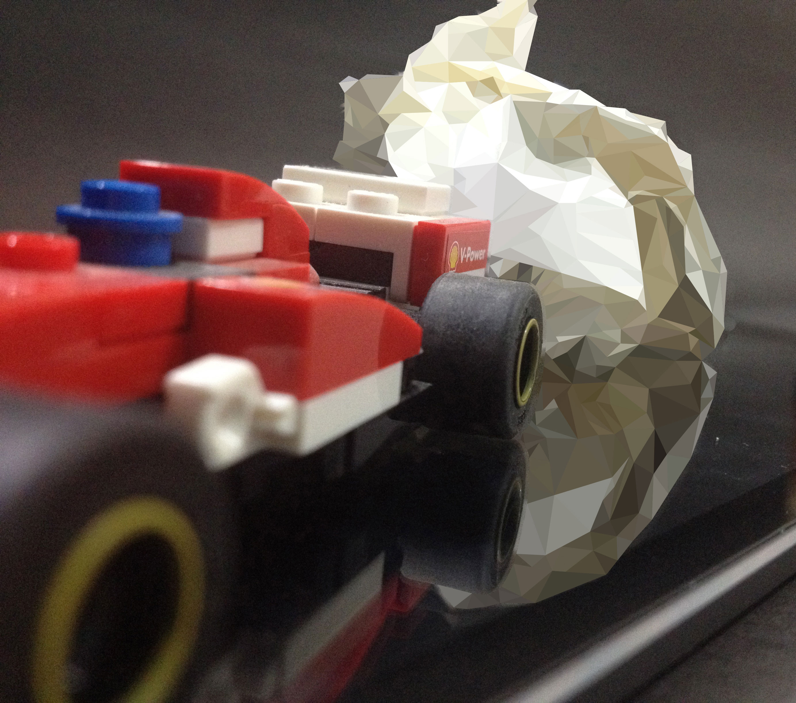
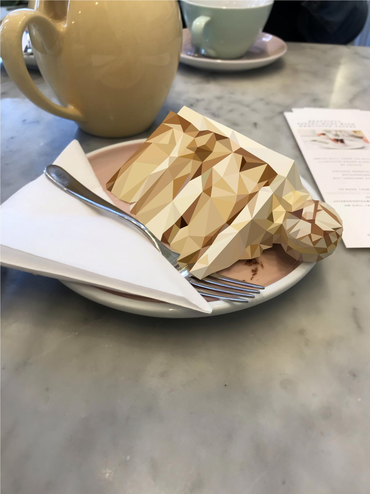

Personal projects for social media.
Daily life photography, highlighting the beauty of routine. Chips from an afternoon studying, a cherished toy, going out to a café with a loved one.
2019, 2017 y 2020 respectively. Above you can see the process of my newest illustration.